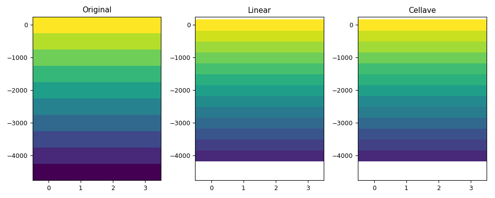
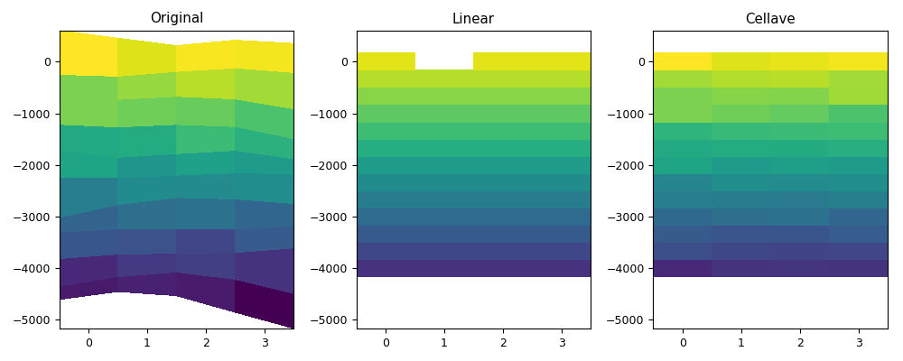
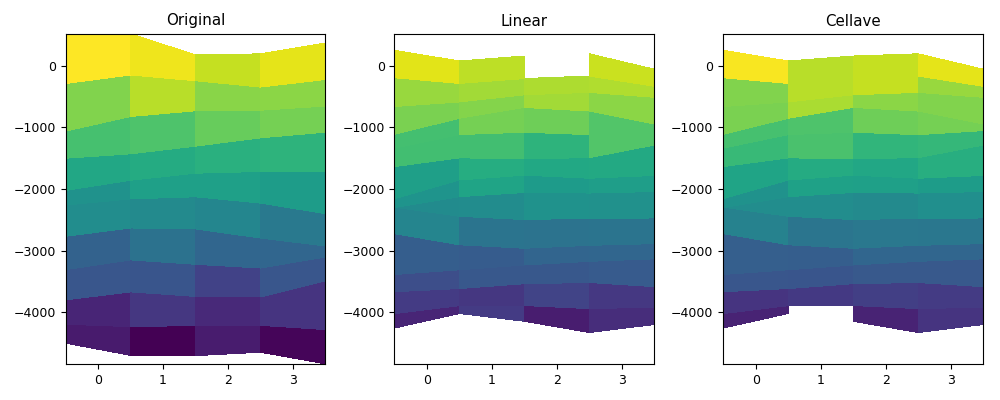
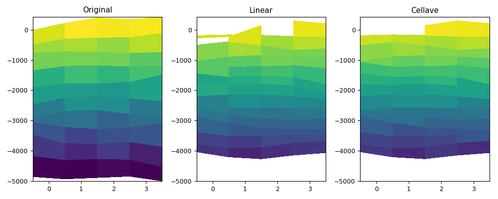
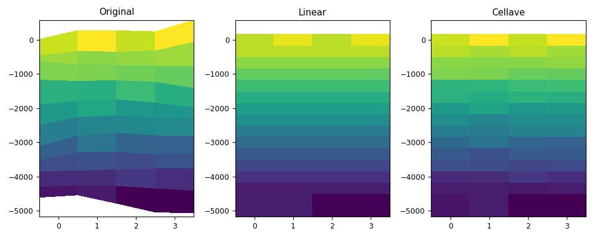

3.5.6.33. test_regrid_regrid1d.py – Test the regrid1d() function¶





"""Test the :func:`~vacumm.misc.grid.regridding.regrid1d` function"""
from vcmq import N,MV2, create_dep, create_time, P,meshcells, minmax, code_file_name
from vacumm.misc.grid.regridding import regrid1d
nt = 2
nx = 4
ny = 3
result = []
def myplot(vari, depi, varol, varoc, depo, figfile):
def getdv(var, dep):
v = var[1, :, 1, :]
if dep[:].ndim==var.ndim:
dep = dep[1, :, 1, :]
elif dep[:].ndim==3:
dep = dep[:, 1, :]
xb, yb = meshcells(v.getAxis(-1), dep)
return xb, yb, v.asma()
xbi, ybi, vi = getdv(vari, depi)
xbo, ybo, vol = getdv(varol, depo)
_, _, voc = getdv(varoc, depo)
vmin, vmax = minmax(vi, vol, voc)
kw = dict(vmin=vmin, vmax=vmax)
P.figure(figsize=(10, 4))
ax = P.subplot(131)
P.pcolormesh(xbi, ybi, vi, **kw)
P.title('Original')
P.subplot(132, sharex=ax, sharey=ax)
P.pcolormesh(xbo, ybo, vol, **kw)
P.title('Linear')
P.subplot(133, sharex=ax, sharey=ax)
P.pcolormesh(xbo, ybo, voc, **kw)
P.ylim(ymin=min(ybi.min(), ybo.min()), ymax=max(ybi.max(), ybo.max()))
P.title('Cellave')
P.tight_layout()
P.savefig(figfile)
# 1d->1d
depi1d = create_dep(N.arange(-4500., 1, 500))
depo1d = create_dep(N.arange(-4000., 1, 333.33))
nzi = depi1d.shape[0]
vari = MV2.asarray(N.ma.resize(depi1d[:], (nt, ny, nx, nzi)).transpose([0, 3, 1, 2]))
vari.setAxis(1, depi1d)
varol1 = regrid1d(vari, depo1d, method='linear')
varol2 = regrid1d(vari, depo1d, method='linear', iaxi=0, iaxo=0, axi=depi1d)
result.append(('assertEqual', [(varol1-varol2).std(), 0]))
varoc = regrid1d(vari, depo1d, method='cellave')
myplot(vari, depi1d, varol1, varoc, depo1d, code_file_name(ext='_0.png'))
# 4d->1d
depi1d = N.arange(-4500., 1, 500)
nzi = depi1d.shape[0]
depi4d = N.resize(N.resize(depi1d, (nx, ny, nzi)).T, (nt, nzi, ny, nx))
depi4d += 500*(N.random.random(depi4d.shape)-0.5)
depo1d = create_dep(N.arange(-4000., 1, 333.33))
vari = MV2.array(depi4d, fill_value=1e20)
vari.getAxis(1).designateLevel()
depi4d = MV2.asarray(depi4d)
depi4d.getAxis(1).designateLevel()
varol1 = regrid1d(vari, depo1d, method='linear', axi=depi4d)
varol2 = regrid1d(vari, depo1d, method='linear', iaxi=1, axi=depi4d)
result.append(('assertEqual', [(varol1-varol2).std(), 0]))
varoc = regrid1d(vari, depo1d, method='cellave', iaxi=1, axi=depi4d)
myplot(vari, depi4d, varol1, varoc, depo1d, code_file_name(ext='_1.png'))
# 4d->4d
depi1d = N.arange(-4500., 1, 500)
nzi = depi1d.shape[0]
depi4d = N.resize(N.resize(depi1d, (nx, ny, nzi)).T, (nt, nzi, ny, nx))
depi4d += 500*(N.random.random(depi4d.shape)-0.5)
depo1d = create_dep(N.arange(-4000., 1, 333.33))
nzo = depo1d.shape[0]
depo4d = N.resize(N.resize(depo1d, (nx, ny, nzo)).T, (nt, nzo, ny, nx))
depo4d += 500*(N.random.random(depo4d.shape)-0.5)
vari = MV2.array(depi4d, fill_value=1e20)
vari.getAxis(1).designateLevel()
depi4d = MV2.asarray(depi4d)
depi4d.getAxis(1).designateLevel()
depo4d = MV2.asarray(depo4d)
depo4d.getAxis(1).designateLevel()
varol1 = regrid1d(vari, depo4d, axis=1, method='linear', axi=depi4d)
varol2 = regrid1d(vari, depo4d, axis=1, method='linear', iaxi=1, axi=depi4d, iaxo=1)
result.append(('assertEqual', [(varol1-varol2).std(), 0]))
varoc = regrid1d(vari, depo4d, axis=1, method='cellave', iaxi=1, axi=depi4d, iaxo=1)
myplot(vari, depi4d, varol1, varoc, depo4d, code_file_name(ext='_2.png'))
# 4d->3d
depi1d = N.arange(-4500., 1, 500)
nzi = depi1d.shape[0]
depi4d = N.resize(N.resize(depi1d, (nx, ny, nzi)).T, (nt, nzi, ny, nx))
depi4d += 500*(N.random.random(depi4d.shape)-0.5)
depo1d = create_dep(N.arange(-4000., 1, 333.33))
nzo = depo1d.shape[0]
depo3d = N.resize(depo1d, (nx, ny, nzo)).T
depo3d += 500*(N.random.random(depo3d.shape)-0.5)
vari = MV2.array(depi4d, fill_value=1e20)
vari.getAxis(1).designateLevel()
depi4d = MV2.asarray(depi4d)
depi4d.getAxis(1).designateLevel()
depo3d = MV2.asarray(depo3d)
depo3d.getAxis(1).designateLevel()
varol1 = regrid1d(vari, depo3d, axis=1, method='linear', axi=depi4d)
varol2 = regrid1d(vari, depo3d, axis=1, method='linear', iaxi=1, axi=depi4d, iaxo=0)
result.append(('assertEqual', [(varol1-varol2).std(), 0]))
varoc = regrid1d(vari, depo3d, axis=1, method='cellave', iaxi=1, axi=depi4d, iaxo=0)
myplot(vari, depi4d, varol1, varoc, depo3d, code_file_name(ext='_3.png'))
# 4d->1d avec extrap=2
depi1d = N.arange(-4500., 1, 500)
nzi = depi1d.shape[0]
depi4d = N.resize(N.resize(depi1d, (nx, ny, nzi)).T, (nt, nzi, ny, nx))
depi4d += 500*(N.random.random(depi4d.shape)-0.5)
depo1d = create_dep(N.round(N.arange(-5000., 1, 333.33)))
vari = MV2.array(depi4d, fill_value=1e20)
vari.getAxis(1).designateLevel()
depi4d = MV2.asarray(depi4d)
depi4d.getAxis(1).designateLevel()
varol1 = regrid1d(vari, depo1d, method='linear', axi=depi4d, extrap=2)
varol2 = regrid1d(vari, depo1d, method='linear', iaxi=1, axi=depi4d, extrap=2)
result.append(('assertEqual', [(varol1-varol2).std(), 0]))
varoc = regrid1d(vari, depo1d, method='cellave', iaxi=1, axi=depi4d, extrap=2)
myplot(vari, depi4d, varol1, varoc, depo1d, code_file_name(ext='_4.png'))
P.close()